JE VEUX LE FAIRE VIVRE AUX AUTRES.
- 01Légèreté et liberté
- 02Je lâche prise, j’oublie le quotidien
- 03Je profite du moment présent
- 04Le partage : copines, rire, danser, souvenirs
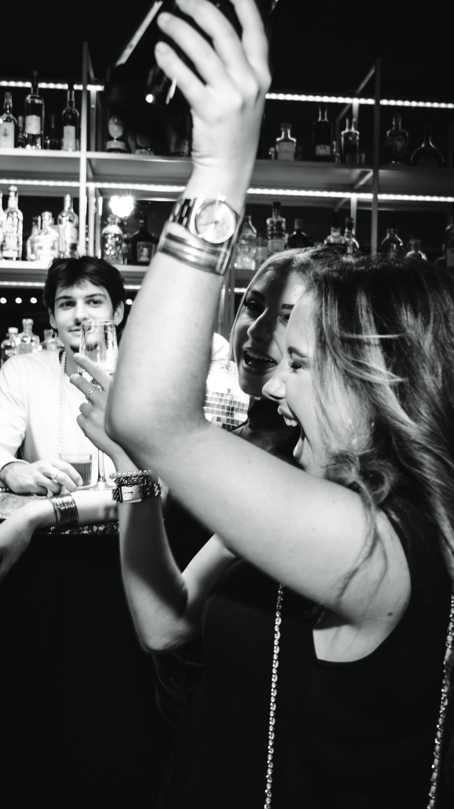
Communication · Image · Événementiel
Depuis juin 2026, je suis chargée de communication en alternance au sein du Groupe Laurentie.
Communication, image, événements : j’aime faire vivre les idées.
J’ai obtenu mon DUT Techniques de Commercialisation à l’Université de Bordeaux, avec une spécialité en business.
Je suis aujourd’hui en troisième année de Bachelor à l’INSEEC, avec une spécialité en communication. En alternance, je crée des contenus et j’accompagne l’organisation d’événements pour trois établissements bordelais.
MON PARCOURS ↗ BANNIÈRE LINKEDIN · COMMUNICATION & ÉVÉNEMENTIEL ↗
BANNIÈRE LINKEDIN · COMMUNICATION & ÉVÉNEMENTIEL ↗
MES PASSIONS
La danse fait partie de mes passions et de ma façon de m’exprimer. Sur scène, j’aime l’énergie du groupe, le mouvement et le lien qui se crée avec le public. Les spectacles m’ont appris à m’investir dans une création collective et à faire attention à chaque détail qui donne vie à un moment.
Cette expérience nourrit aussi mon regard sur l’événementiel : je suis sensible à la musique, à l’ambiance, aux lumières et à la manière dont les personnes vivent une soirée. Ces photographies sont tirées de mon oral sur la fête.
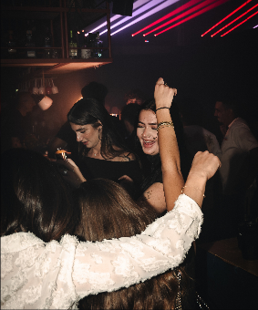


LIBERTÉ · PARTAGE · CRÉATIVITÉ
La fête m’apporte de la légèreté et de la liberté. Je lâche prise, j’oublie le quotidien et je profite du moment présent. J’aime le partage avec mes copines : rire, danser et créer des souvenirs.
Mais mon intérêt ne s’arrête pas à la soirée. Je regarde aussi ce qui la prépare : les tenues et la musique, l’ambiance d’un lieu, sa décoration, son accueil et son service. J’observe, je m’inspire, et ça nourrit mon alternance et mon futur projet.
J’observe, je m’inspire, et cela nourrit mon alternance et mon futur projet.
Ces univers m’attirent par leur créativité et leur sens de l’accueil. Ils se rejoignent dans ce que j’aime : imaginer une ambiance, rencontrer des personnes et construire une expérience autour de la musique et de l’événementiel.
Pendant deux ans, j’ai préparé le Gala TC avec onze autres étudiants et participé à un projet doté d’un budget de 10 000 €. J’y ai découvert la coordination, la décoration, les prestataires, le travail d’équipe et l’accueil des invités. Rencontres, cultures et musiques : j’aime créer des liens à travers une soirée.
DÉCOUVRIR LE GALA TC ↗Au Bourbon, à La Solera et au Zéphyr, je découvre les lieux, les équipes, les prestataires et l’expérience client. Je participe à imaginer des rendez-vous, à préparer les contenus et à donner une identité à chaque moment.
DÉCOUVRIR MON ALTERNANCE ↗Pour préparer les soirées, j’ai participé à la décoration, à la recherche de DJ, aux échanges avec les prestataires et à la préparation des animations.
J’ai pu découvrir Nebat Drums, percussionniste sur la scène d’Ibiza, Tony Vegas, DJ à L’Arc Paris, et les danseuses présentes chaque semaine. Leur énergie et leur travail m’inspirent.
« Je ne veux pas seulement profiter de la fête, je veux créer des endroits où les autres peuvent, eux aussi, la vivre. »
Cette passion se prolonge dans mon projet de restaurant festif à Bordeaux, au sein de mon alternance.
Mon DUT est un atout majeur : il m’a appris à comprendre les besoins d’un client, à construire une offre et à réfléchir à sa valeur commerciale. Pour un restaurant festif, cette base m’aide à penser à la fois l’expérience, la clientèle et la viabilité du lieu.
Je poursuis aujourd’hui un Bachelor à l’INSEEC, avec une spécialité en communication, en alternance au sein du Groupe Laurentie. C’est ma porte d’entrée dans la restauration festive : j’apprends à raconter l’identité d’un lieu, à créer des contenus et à faire connaître ses événements.
Mon DUT et mon Bachelor se complètent : le premier m’aide à penser la clientèle et le modèle du lieu ; le second m’apprend à lui donner une voix et à créer le lien avec son public.
À l’Université de Bordeaux, avec une spécialité en business. Cette formation m’a donné des bases solides en marketing, relation client, négociation et développement commercial. J’ai appris à analyser les besoins d’un public, à construire une offre cohérente et à défendre un projet avec des arguments concrets.
Pour mon projet de restaurant festif, c’est un atout majeur : il m’aide à réfléchir au positionnement, aux clients que je souhaite accueillir, à l’expérience proposée et à l’équilibre économique qui permettra au lieu de durer.
DÉCOUVRIR MON PARCOURS EN TECHNIQUES DE COMMERCIALISATION ↗CE QUE MA FORMATION M’APPORTE
PROJET TUTORÉ · ORGANISATION
En équipe, nous avons construit le Gala TC à l’Orangerie du Manoir, de la première idée à la soirée puis au bilan. J’ai contribué à réunir les étudiants, les partenaires et les invités autour d’un événement pensé collectivement.
Avec onze autres étudiants, j’ai participé pendant deux ans à la préparation du Gala TC à l’Orangerie du Manoir. L’objectif : réunir étudiants, partenaires et invités autour d’une soirée élégante, et faire avancer le projet de la première idée jusqu’au dernier bilan.
Définir le public, le format de la soirée, les besoins et les étapes de travail pour transformer une intention en plan d’action partagé.
Prospecter, présenter le projet et suivre les échanges avec les sponsors. Le pôle commercial a notamment travaillé avec le Trélissac Football Club et les chocolats De Marlieu, ainsi que sur les conventions et la défiscalisation des dons.
Participer à la stratégie de communication, à la charte graphique et au logo, puis préparer les contenus pour donner envie de rejoindre l’événement.
Suivre les démarches administratives — dont la licence III et le dossier FSDIE —, les prestataires, la décoration, le budget et les besoins de l’équipe.
Après la soirée, clôturer le dossier 2024, suivre les dépenses et les retombées, et tirer des enseignements pour les projets suivants.
Ce projet m’a appris à organiser sur la durée, à négocier avec des partenaires, à répartir les rôles et à garder une vision d’ensemble tout en soignant les détails. J’y ai développé la gestion de projet, la communication, le suivi budgétaire, la coordination d’équipe et ma capacité à réagir aux imprévus.


DEPUIS JUIN 2026
Je suis chargée de communication en alternance pour le Groupe Laurentie. Depuis juin 2026, je travaille avec les équipes du Bourbon, de La Solera et du Zéphyr et participe à la communication et à la préparation de leurs événements.

01 · RESTAURANT FESTIF & CLUB
Au Bourbon, je prends part à la communication d’un restaurant festif et d’un club. Pour l’anniversaire de septembre et Halloween, j’ai suivi les étapes de préparation avec mes collègues Samantha et Célia ; je prépare également le réveillon du Nouvel An.
J’aime pouvoir suivre un projet du choix de l’ambiance jusqu’aux images qui en gardent une trace. Cette expérience me fait progresser en organisation, coordination, direction artistique et communication digitale.
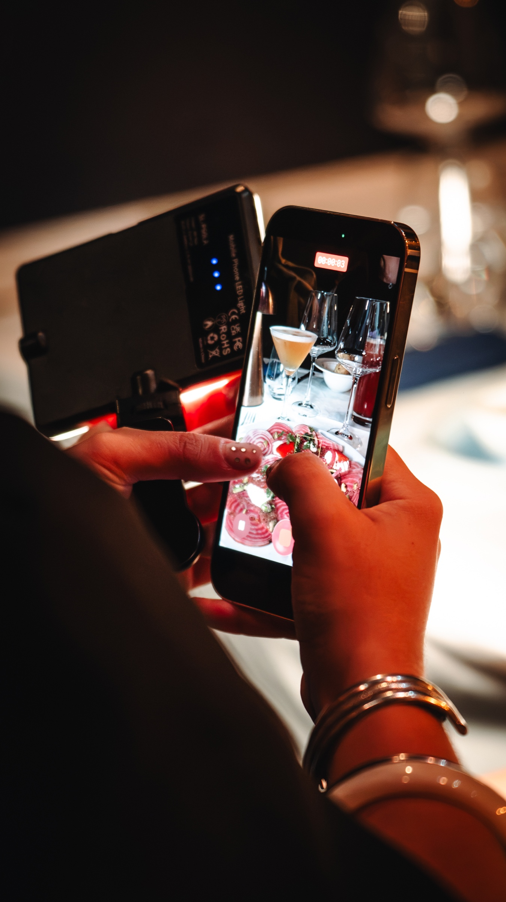


02 · BAR À VIN & ASSIETTES À PARTAGER
À La Solera, j’ai participé à la préparation d’un tournage et aux choix de direction artistique. Avec l’équipe, nous avons précisé l’ambiance souhaitée, choisi les images à réaliser et organisé les prises de vue pour mettre le lieu en valeur.
J’ai aussi travaillé sur la manière de raconter l’esprit de la maison : le vin, les assiettes à partager et le plaisir de se retrouver. Cette expérience m’a appris à traduire une identité en choix visuels concrets, à préparer un tournage et à travailler en lien avec les équipes du restaurant.


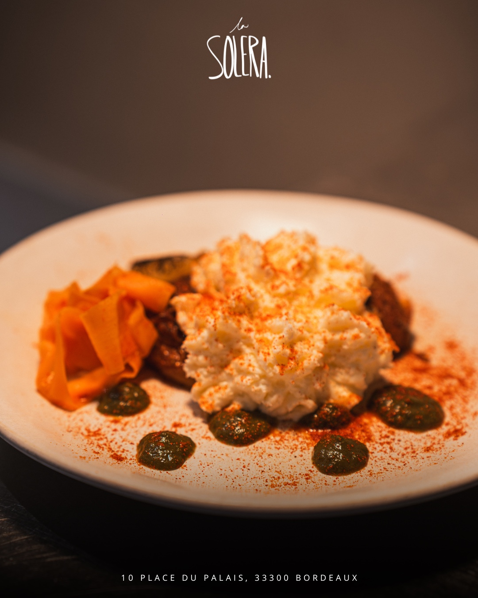

03 · BRASSERIE · ROOFTOP · FUMOIR
De juin à octobre, j’ai accompagné la communication des différents espaces du Zéphyr : la brasserie, le rooftop et le fumoir. J’ai participé à la préparation des rendez-vous, en reliant l’identité de chaque espace aux contenus et aux actions de communication.
J’ai découvert comment coordonner plusieurs univers au sein d’une même adresse, travailler avec des intervenants extérieurs et transformer une intention en programme concret.
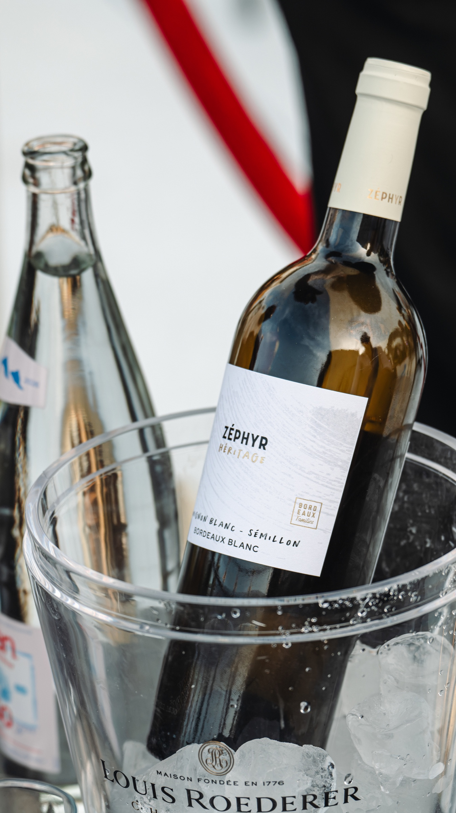

PHOTOGRAPHIES · AMBIANCES · ÉQUIPES
Des photos de salle, de service et de soirée donnent à voir des univers différents. Elles accompagnent les projets de communication et les campagnes que je prépare avec les équipes.

MES CRÉATIONS GRAPHIQUES
Affiches, invitations, programmations et jeux concours : chaque création commence par une idée, puis prend forme dans un univers visuel adapté au lieu et à son public. Fais défiler les colonnes pour parcourir mes campagnes Bourbon, La Solera et Zéphyr.


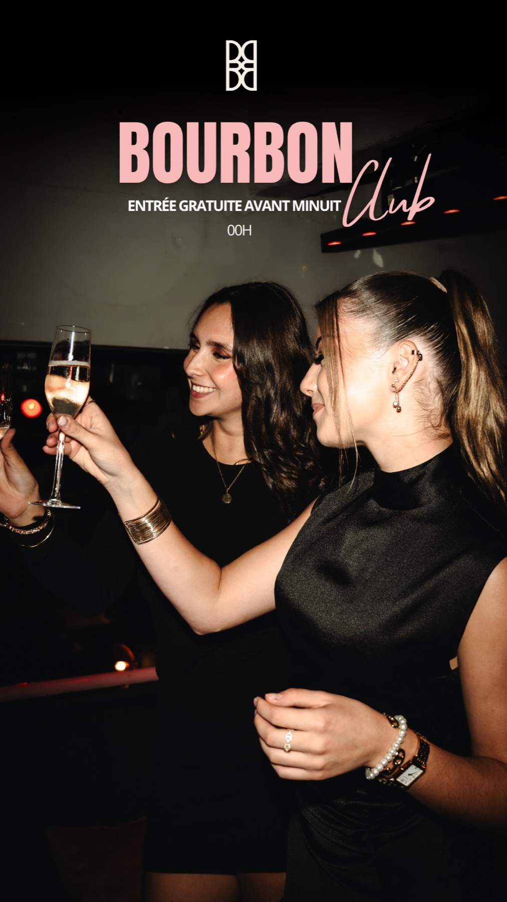

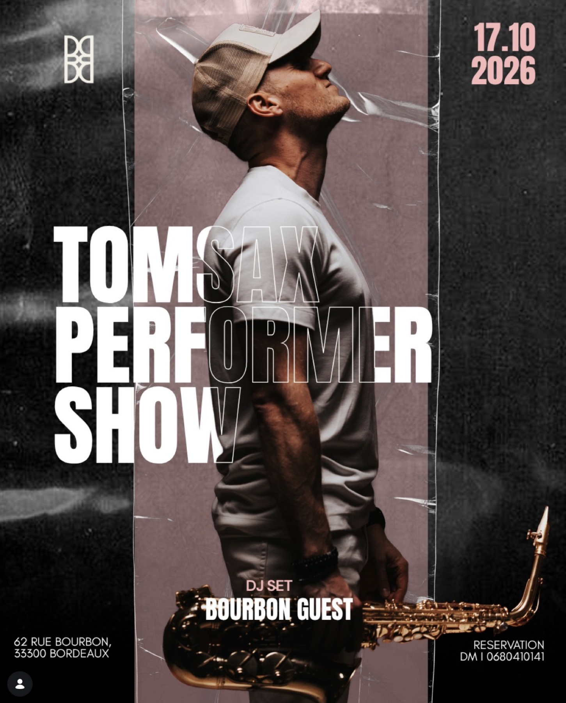

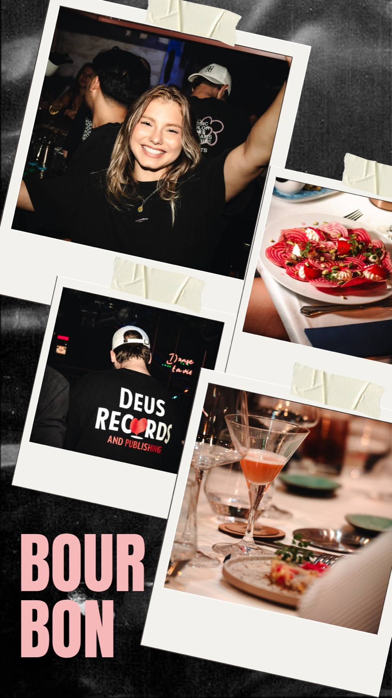


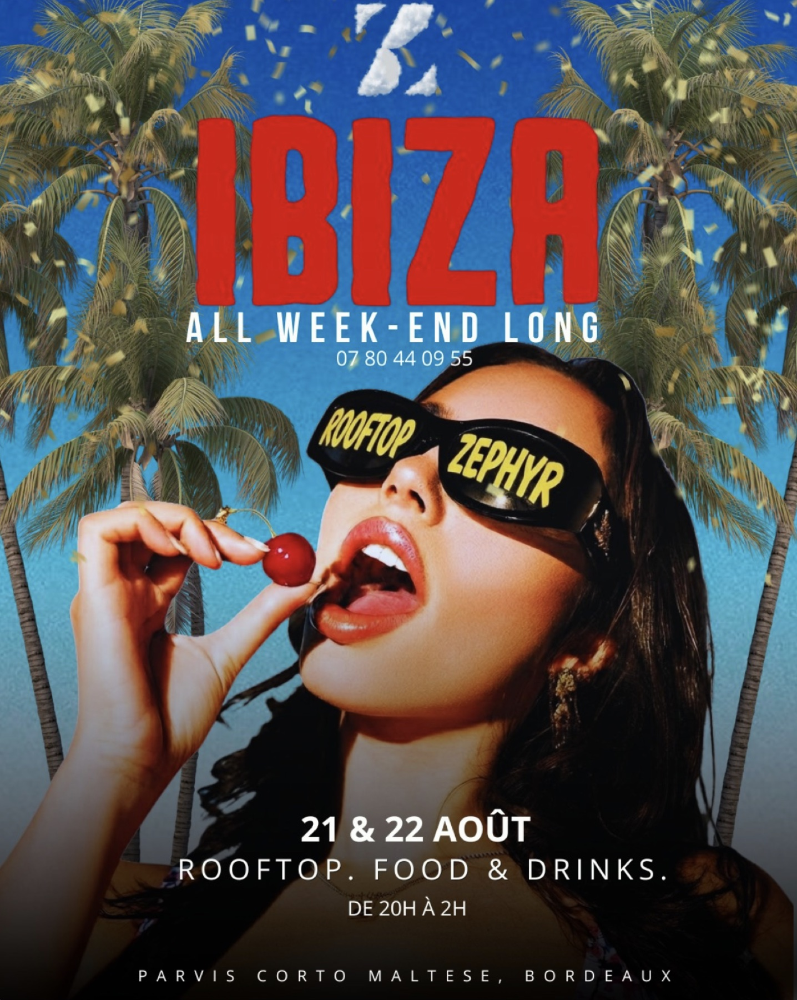


LES COLONNES DÉFILENT EN SENS INVERSÉS · SURVOLE UNE IMAGE POUR EN CHANGER L’ANGLE
PARTIE 4 · MON PROJET
Je souhaite ouvrir mon propre restaurant festif à Bordeaux : un lieu où l’on se retrouve pour bien manger, partager, danser et créer des souvenirs. Mon alternance me permet d’apprendre chaque jour comment une adresse se construit, de l’identité visuelle à l’expérience vécue sur place. Bordeaux m’inspire par son énergie, son patrimoine et son art de vivre. La détermination que je mets dans ce projet aujourd’hui n’est que le début d’une belle aventure.
LIBERTÉ · LÉGÈRETÉ · PLAISIR · PARTAGE

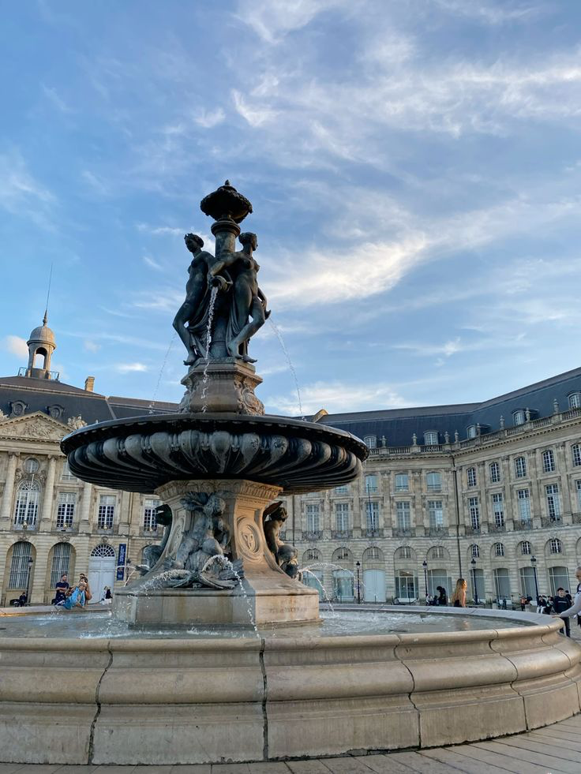

PRESSE · TOURNAGES · ÉDITION
Avec Christopher et l’équipe du magazine SMILE, j’ai participé à la présentation du Bourbon, de La Solera et du Zéphyr. Nous avons défini la direction artistique, sélectionné les images et organisé des journées de tournage pour les trois restaurants. Au Bourbon, j’ai été filmée par un vidéaste et j’ai participé à la relecture du texte destiné au magazine print. Nous avons également préparé des jeux concours pour prolonger ces contenus sur Instagram.
VOIR LE TOURNAGE SMILE AU BOURBON ↗Le tournage du Zéphyr est également dans la galerie vidéo.
VOIR LA VIDÉO SMILE DU ZÉPHYR ↗MAGAZINE PRINT & MÉDIA
Choix éditoriaux, préparation des tournages, images et textes : une collaboration qui m’a permis de suivre la création d’un sujet de presse du brief à sa publication.
DÉCOUVRIR SMILE ↗LE BOURBON · VOIR LA PUBLICATION ↗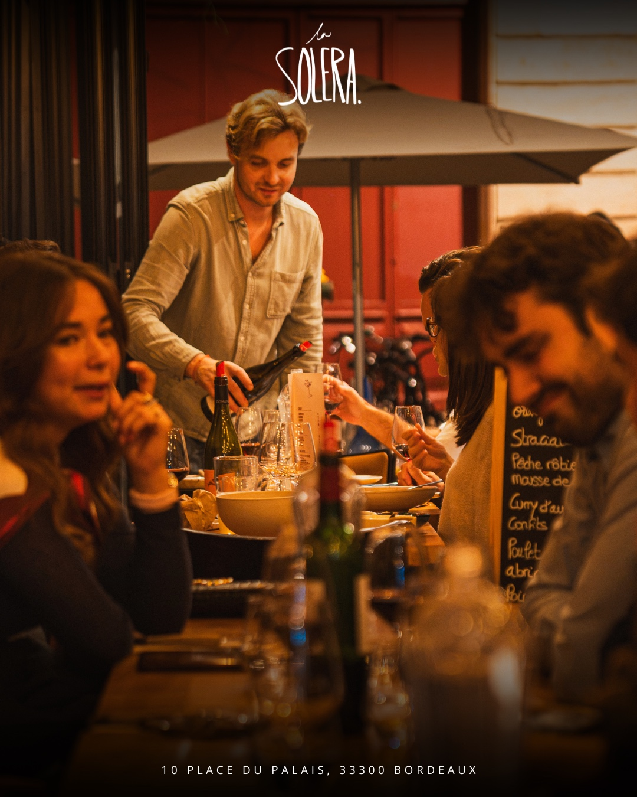
LA SOLERA · VOIR LA PUBLICATION ↗LE ZÉPHYR · VOIR LA PUBLICATION ↗LA SOLERA × SMILE · VISUELS ET UNIVERS DE CAMPAGNE

CE QUE MES PROJETS M’APPRENNENT
Au Bourbon, j’ai contribué à préparer l’anniversaire et Halloween : recherche de thèmes et de DJ, décoration, création des événements, plan de communication, contenus de soirée et coordination avec Samantha, Célia et des prestataires. Je prépare aussi la communication des prochains temps forts, dont le Nouvel An.
Au Zéphyr, j’ai travaillé sur le rooftop, la brasserie et le fumoir, jusqu’à l’organisation d’une soirée cigare avec des partenaires extérieurs. À La Solera, j’ai participé à la préparation d’un tournage, au choix des images et à la direction artistique souhaitée pour raconter l’identité du lieu.
Ces projets m’ont fait progresser en gestion de projet, organisation événementielle, direction artistique, création photo et vidéo, communication digitale, suivi de prestataires et travail d’équipe. J’apprends à anticiper, à m’adapter aux imprévus et à relier une idée créative aux besoins réels d’un établissement.
J’ai pensé mes stages comme des étapes complémentaires : découvrir la communication et le marketing, comprendre la vente et la relation client, puis gagner en autonomie sur des projets concrets. Ces premières expériences ont construit les bases qui m’ont permis d’accéder à mon alternance actuelle en communication.
Au sein de We Are Together, j’ai découvert de près le fonctionnement d’une agence : les pôles stratégie, création, digital et communication corporate, ainsi que leurs échanges au fil d’une campagne. J’ai observé comment un brief se transforme en idée, comment les expertises se complètent et comment une équipe coordonne ses réponses pour différents publics.
Cette immersion a confirmé mon intérêt pour les métiers de la communication et m’a donné des repères sur les méthodes et les rôles présents en agence.
VOIR MA PUBLICATION LINKEDIN ↗DÉCOUVRIR L’AGENCE ↗J’ai participé à la communication d’une boutique mode : création de contenus et de carrousels pour les réseaux sociaux, rédaction d’articles optimisés pour le référencement, réalisation de vidéos TikTok et shootings produits. J’ai également contribué au merchandising et à la mise en valeur de la vitrine.
J’ai préparé des contenus showroom pour Sarah Cretia et échangé avec les clients au quotidien. Cette expérience m’a permis de travailler l’image d’une marque, de produire des formats adaptés aux réseaux sociaux et de relier présentation des produits, expérience en boutique et visibilité en ligne.
 LOOKBOOK · VUE D’ENSEMBLELOOKBOOK · SILHOUETTESLOOKBOOK · DÉTAILS
LOOKBOOK · VUE D’ENSEMBLELOOKBOOK · SILHOUETTESLOOKBOOK · DÉTAILSEn Espagne, j’ai découvert les enjeux de communication d’un acteur de l’immobilier et du tourisme. Mes missions ont porté sur l’analyse du secteur, la création de publications pour les réseaux sociaux, la traduction de contenus du site et du magazine, ainsi que l’étude des stratégies commerciales et du magazine ELITY.
Ce stage m’a permis de travailler l’adaptation d’un message à plusieurs langues et publics, la veille de marché, la rédaction et la cohérence entre communication, offre commerciale et expérience de destination.
DÉCOUVRIR INSERYAL ↗ CORAL 1 · VUE EXTÉRIEURE
CORAL 1 · VUE EXTÉRIEURE CORAL 1 · ARCHITECTURE
CORAL 1 · ARCHITECTURE CORAL 1 · ESPACES DE VIE
CORAL 1 · ESPACES DE VIEChez Promod, j’ai accueilli et conseillé les clientes, participé au merchandising, au réassort et à la bonne tenue de la boutique, et réalisé les encaissements. J’ai aussi pris part aux opérations commerciales et à la présentation des collections.
La vente m’a appris à écouter avant de conseiller, à mieux connaître les attentes d’une clientèle et à contribuer à une expérience cohérente avec l’image de la marque. Ces compétences sont directement utiles pour imaginer la communication d’un lieu qui reçoit du public.
Lors de ce stage de deux semaines, j’ai découvert les exigences d’un point de vente spécialisé : accueil et conseil, vente, mise en rayon, merchandising, suivi des stocks et inventaires, création de bijoux et encaissement.
J’ai appris à présenter un produit, à prendre soin de son exposition et à accompagner une cliente dans son choix. Cette première expérience en boutique m’a apporté des bases solides en vente, en organisation et en sens du détail.
DÉCOUVRIR BIJOUX CAILLOUX ↗

J’ai commencé l’animation à 16 ans et j’ai travaillé pendant les vacances scolaires jusqu’en 2026. J’ai accompagné des enfants de maternelle, des élèves d’élémentaire et des adolescents, en préparant et en animant des activités adaptées à chaque groupe.
Cette expérience m’a appris à transmettre des consignes, à rester attentive à la sécurité, à adapter une activité à l’âge du groupe et à gérer des temps collectifs avec calme. J’y ai développé le sens des responsabilités, l’écoute et l’organisation.
Dès mes 15 ans, j’ai commencé le baby-sitting et la vente de vêtements sur Vinted afin de gagner mon propre argent. Ces premières initiatives m’ont appris à m’organiser, à prendre des responsabilités, à instaurer une relation de confiance avec les familles et à gérer les échanges avec des acheteurs.
UN PROJET, UNE SOIRÉE, UNE IDÉE ?
Je serais ravie de découvrir votre univers, d’échanger autour de vos idées et de voir comment nous pourrions imaginer la suite ensemble.
PRENDRE CONTACT ↗
Bordeaux · France